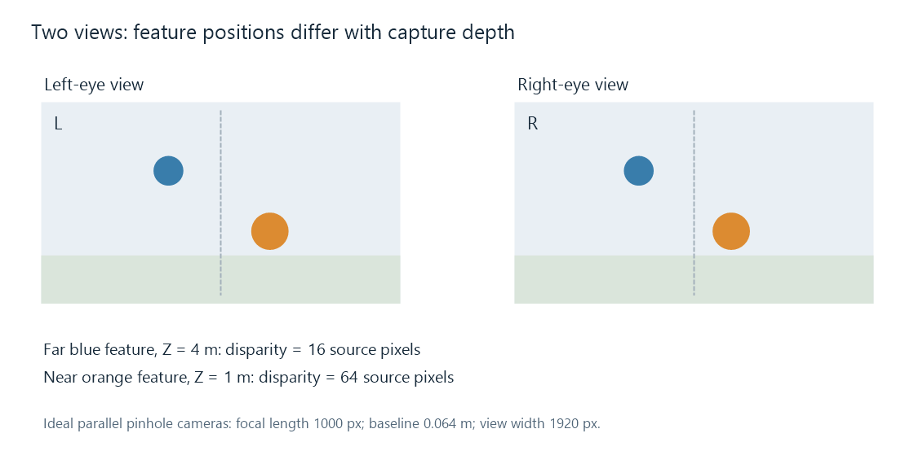
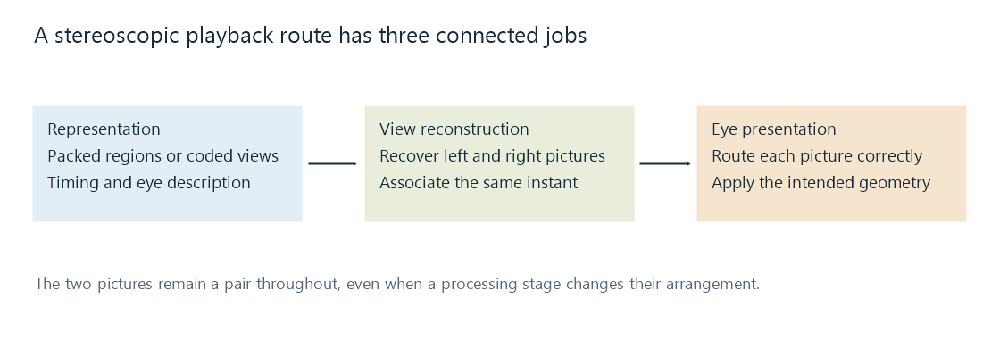

How Stereoscopic Video Works
Stereoscopic video presents related views to the left and right eyes so their differences supply a binocular depth cue.
Hold a finger in front of a distant object and alternate which eye is open. The finger changes its apparent position against the background because the eyes observe the scene from different locations. Stereoscopic video supplies a related pair of views and delivers each to the corresponding eye, using that difference as a depth cue.
The useful unit is a stereo pair at one scene instant. Its left and right images are related, but not identical. A file needs a way to represent both; a decoder or reconstruction stage needs to recover them; a presentation path needs to keep their identity and timing intact.
These jobs explain why an Emby library can contain several kinds of 3D files with very different playback requirements. A packed ordinary frame and a multiview-coded stream can represent similar stereo content through different arrangements.
The position difference carries information
When the camera pair is calibrated and its views are rectified, corresponding features lie along matching image rows. Their horizontal coordinate difference is called disparity. Rectification is the geometric preparation that makes those comparisons meaningful; the original two camera images need not already have that simple alignment.
For an ideal pair of parallel pinhole cameras, let f be focal length in image pixels, B the camera separation, and Z the feature's distance. With the appropriate common coordinate convention:
disparity d = fB/Z.
Take f = 1000 pixels and B = 0.064 metres:
| Feature distance Z | Horizontal disparity d |
|---|---|
| 0.5 m | 128 pixels |
| 1 m | 64 pixels |
| 2 m | 32 pixels |
| 4 m | 16 pixels |
The inverse relationship is the important result: a nearer feature changes its relative position more strongly between the two views. Both focal length and camera baseline also affect the disparity. Arbitrary images from unrelated viewpoints cannot be interpreted using these numbers without establishing their geometry.

The markers use the stated ideal camera model and a 1920-pixel view width. The figure shows the two images as ordinary illustrations; it is not a stereoscopic display test.
Capture disparity and displayed depth
The recorded pixel difference does not by itself specify a physical distance in front of a television. Presentation also involves the size of the displayed images, their alignment, and the viewer's position.
Imagine the separate idealized display geometry of two eyes 0.064 m apart and a screen 2 m away. A feature shown at the same screen coordinate in both images has zero display disparity and corresponds to the screen plane in this simple ray model.
Now show the left-eye feature 0.02 m to the right of the central screen position and the right-eye feature 0.02 m to its left. The eyes' sight lines meet before reaching the screen. With display disparity δ defined as left position minus right position, their intersection distance is:
apparent distance = eye separation × screen distance / (eye separation + δ).
For δ = +0.04 m, the result is 0.064 × 2 / 0.104 ≈ 1.231 m. Reverse the offsets and δ becomes −0.04 m; the intersection is approximately 5.333 m, beyond the screen. These are geometric illustrations, not a prediction of every viewer's perception or a capture-calibration recipe.
Swapping the two eye images changes the sign of their disparity and can reverse this depth cue. Perspective, occlusion, and other cues may still suggest the original scene, so the result can be inconsistent even though each individual image is sharp.
The two views must describe the same instant
If an object moves between frames, a left image from time t and a right image from time t+1 contain motion as well as the intended camera difference. Combining them can turn that motion into a false disparity.
In the capture model above, a feature at 2 m has disparity 32 pixels. Suppose its right-eye image moves eight pixels right in the next frame. Pairing that later right image with the original left image gives an apparent disparity of 24 rather than 32. Interpreting it through the same model would suggest 64/24 ≈ 2.667 m instead of 2 m.
The storage may use one packed frame, two view components, or another arrangement, but the pairing still needs the correct presentation time. Decode order can differ from presentation order, especially when coded pictures depend on references. A view's position in a packet list is not a substitute for its time and identity.
Representations preserve the pair in different ways
Each representation has its own article:
- Side-by-side puts the two views in neighboring frame regions.
- Top-and-bottom stacks them in frame regions.
- MVC uses H.264 multiview coding, including predictions between views.
- MV-HEVC uses HEVC layers for the views and can carry additional spatial presentation information.
The spatially packed forms can be decoded as one conventional picture grid. Their reconstruction stage extracts the regions and applies the intended view geometry. Multiview coding instead needs the codec's view reconstruction and dependencies understood before the separate pictures are available.
A view identifier describes a camera view; a layer identifier locates coded data in some representations. Neither should be casually equated with a left/right eye label. The association between the recovered view and the intended eye completes that description.
Presentation keeps the eye channels separate

A headset can route images to separate eye displays. Other systems use polarization or synchronized shutter glasses to separate the views from a shared screen. The mechanisms differ, while their task remains the same: each eye receives the picture intended for it at the appropriate instant.
An active-shutter display can alternate eye presentation. That refresh sequence should not be confused with the number of distinct scene instants in the movie. A 24-pair-per-second source provides 24 new pictures per second for each eye, although it contains 48 eye images in total per second.
HDMI frame packing is one output arrangement for transporting a pair to a display. The compressed movie codec and the selected display timing remain separate parts of the route.
What a change of playback route needs to preserve
For an Emby comparison, start with the selected representation and delivered output. If a server preserves a packed frame, both regions can survive as picture content, but the app still needs their layout and eye interpretation. If a conversion produces just one decoded view, the result has become a monoscopic version. If it retains two views while changing their dimensions, their intended shape and relative positioning need to survive that transformation.
Emby's 3D identification documentation covers the library's format labels and naming conventions. Identification records the representation being used. The remaining questions concern reading its data, reconstructing the pair, and presenting it through the selected app and output path.
A stereo pair samples the scene from two viewpoints. A large new head position would require information for a different viewpoint, including regions that may be hidden in both original images. Binocular depth in the supplied pair and the ability to freely navigate a fully represented scene are different capabilities.
See Also
- Side-by-Side 3D Video
- Top-and-Bottom 3D Video
- Frame-Packed 3D Video
- Multiview Video Coding (MVC)
- MV-HEVC and Spatial Video